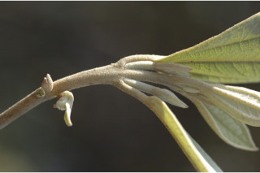
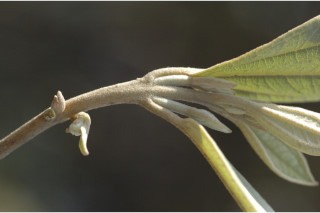
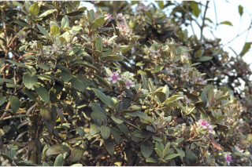
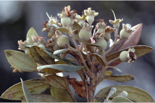
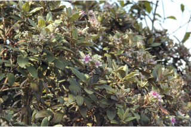
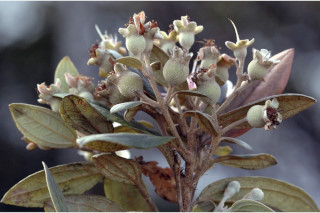
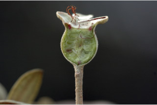
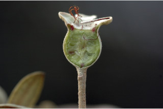

Trees up to 5 m tall.
5 ಮೀ. ಎತ್ತರದವರೆಗೆ ಬೆಳೆಯುವ ಮರಗಳು.
Trees up to 5 m tall.
மரங்கள் 5 மீ. உயரம் வரை வளரக்கூடியது.
Bark brown, scaly; blaze cream.
ತೊಗಟೆ ಕಂದು ಬಣ್ಣದಲ್ಲಿದ್ದು, ಪೊರೆ ರೂಪ ಹೊಂದಿರುತ್ತವೆ;ಕಚ್ಚು ಮಾಡಿದ ಜಾಗ ಕೆನೆ ಬಣ್ಣದಲ್ಲಿರುತ್ತದೆ.
Bark brown, scaly; blaze cream.
மரத்தின் பட்டை ப்ரவுன் நிறமானது, செதில்களுடையது; உள்பட்டை கிரீம் நிறமானது.
Young branchlets terete, grey tomentose.
ಎಳೆ ಕಿರುಕೊಂಬೆಗಳು ದುಂಡಾಗಿದ್ದು,ಬೂದು ಬಣ್ಣದ ದಟ್ಟ ಮೃದು ತುಪ್ಪಳದಿಂದ ಕೂಡಿರುತ್ತವೆ.
Young branchlets terete, grey tomentose.
சிறியநுனிக்கிளைகள் குறுக்குவெட்டுத் தோற்றத்தில் வளையமானது, சாம்பல் நிறமான உரோமங்களுடையது.
Leaves simple, opposite, decussate; petiole 0.5-0.8 cm long, planoconvex in cross section, grey tomentose; lamina 3-7.5 x 1.3-4.5 cm, elliptic, apex acute with mucronate tip, base acute to obtuse, margin entire and recurved, grey tomentose beneath, coriaceous; midrib flat above; 3-nerved suprabasally; lateral nerves reaching leaf apex; intramarginal nerve present; higher order nerves strongly reticulate.
ಎಲೆಗಳು ಸರಳವಾಗಿದ್ದು ಅಭಿಮುಖವಾಗಿ ಜೋಡನೆಗೊಂಡಿದ್ದು ಕಾಂಡದ ಎರಡೂ ಕಡೆ ಎದುರು ಬದರಿನ ಲಂಬ ಸಾಲಿನಲ್ಲಿರುತ್ತವೆ;ತೊಟ್ಟುಗಳು 0.5-0.8 ಸೆಂ.ಮೀ. ಉದ್ದ ಹೊಂದಿದ್ದು ಅಡ್ಡ ಸೀಳಿದಾಗ ಸಪಾಟ ಪೀನ ಮಧ್ಯದ ಆಕಾರದಲ್ಲಿರುತ್ತವೆ,ಹಾಗೂ ಬೂದು ಬಣ್ಣದ ದಟ್ಟ ಮೃದು ತುಪ್ಪಳದಿಂದ ಕೂಡಿರುತ್ತವೆ;ಪತ್ರಗಳು 3-7.5 X1.3-4.5 ಸೆಂ.ಮೀ.ನ ಗಾತ್ರವಿದ್ದು ಅಂಡವೃತ್ತದ ಆಕಾರ ಹೊಂದಿದ್ದು ಮೊನಚು ಮುಳ್ಳನ್ನುಳ್ಳ ತುದಿ, ಚೂಪಾದುದರಿಂದ ಹಿಡಿದು ಚೂಪಲ್ಲದ ರೀತಿಯವರೆಗಿನ ಬುಡ, ನಯವಾದ ಮತ್ತು ಹಿಂಬಾಗಿದ ಅಂಚನ್ನು ಹೊಂದಿರುತ್ತವೆ,ಪತ್ರಗಳು ತಳಭಾಗದಲ್ಲಿ ಬೂದು ಬಣ್ಣದ ದಟ್ಟ ಮೃದು ತುಪ್ಪಳದಿಂದ ಆವೃತವಾಗಿರುತ್ತವೆ ಮತ್ತು ತೊಗಲನ್ನೋಲುವ ಮೇಲ್ಮೈ ಹೊಂದಿರುತ್ತವೆ; ಮಧ್ಯನಾಳ ಪತ್ರದ ಮೇಲ್ಭಾಗದಲ್ಲಿ ಚಪ್ಪಟೆಯಾಗಿರುತ್ತದೆ;ಅಗ್ರ ಆಧಾರ ನಾಳಗಳು 3;ಪಾರ್ಶ್ವ ನಾಳಗಳು ಎಲೆಯ ತುದಿಯನ್ನು ಮುಟ್ಟುತ್ತವೆ;ಅಂತರ ಅಂಚಿನ ನಾಳಗಳು ಇರುತ್ತವೆ; ಮೇಲ್ದರ್ಜೆಯ ನಾಳಗಳು ಪ್ರಮುಖವಾದ ಜಾಲಬಂಧ ನಾಳ ವಿನ್ಯಾಸದಲ್ಲಿರುತ್ತವೆ.
Leaves simple, opposite, decussate; petiole 0.5-0.8 cm long, planoconvex in cross section, grey tomentose; lamina 3-7.5 x 1.3-4.5 cm, elliptic, apex acute with mucronate tip, base acute to obtuse, margin entire and recurved, grey tomentose beneath, coriaceous; midrib flat above; 3-nerved suprabasally; lateral nerves reaching leaf apex; intramarginal nerve present; higher order nerves strongly reticulate.
இலைகள் தனித்தவை, எதிரடுக்கமானவை, குறுக்குமறுக்கானவை; இலைக்காம்பு 0.5-0.8 செ.மீ. நீளமானது, இலைக்காம்பு குறுக்குவெட்டுத் தோற்றத்தில் பிளேனோகான்வக்ஸ், சாம்பல் நிறமான உரோமங்களுடையது; இலை அலகு 3-7.5 x 1.3-4.5 செ.மீ., நீள்வட்ட வடிவானது, அலகின் நுனி கூரியது மற்றும் மூயூக்கரனேட், அலகின் தளம் கூரியது முதல் மெட்டையானது, அலகின் விளிம்பு முழுமையானது மற்றும் மற்றும் பின்புறம் வளைந்து காணப்படும், அலகின் கீழ்பரப்பு சாம்பல் நிறமான உரோமங்களுடையது, கோரியேசியஸ்; மையநரம்பு மேற்பரப்பில் அலகின் பரப்பிற்கு சமமானது; அலகின் தளத்திற்கு சற்று மேலே மூன்று நரம்புகளை உடையது; பக்க நரம்புகள் நுனி வரை செல்லக்கூடியவை; விளிம்பு நரம்பு (இண்ட்ராமார்ஜினல் நரம்பு) கொண்டது; சிறு நரம்புகள் தடித்தவை வலைப்பின்னல் போன்றவை.
Inflorescence cymes, axillary, up to 8 flowered; flowers large; pedicel 0.5 cm long; petals rosy white; stamens many, rosy-pink.
ಪುಷ್ಪಮಂಜರಿಗಳು ಅಕ್ಷಾಕಂಕುಳಿನ ಮಧ್ಯಾರಂಭಿ ಮಾದರಿಯಲ್ಲಿದ್ದು 8 ಸಂಖ್ಯೆವರೆಗೆ ಹೂಗಳನ್ನು ಹೊಂದಿರುತ್ತವೆ;ಹೂಗಳು ದೊಡ್ಡ ಗಾತ್ರದವು;ಹೂ ತೊಟ್ಟುಗಳು 0.5 ಸೆಂ.ಮೀ ಉದ್ದವಿರುತ್ತವೆ;ಪುಷ್ಪ ದಳಗಳು ಗುಲಾಬಿ ಮಿಶ್ರಿತ ಬಿಳಿ ಬಣ್ಣದವು;ಕೇಸರಗಳು ಹೆಚ್ಚಿನ ಸಂಖ್ಯೆಯಲ್ಲಿದ್ದು ಗುಲಾಬಿ ಮಿಶ್ರಿತ ನಸುಗೆಂಪು ಬಣ್ಣ ಹೊಂದಿರುತ್ತವೆ.
Inflorescence cymes, axillary, up to 8 flowered; flowers large; pedicel 0.5 cm long; petals rosy white; stamens many, rosy-pink.
மஞ்சரி சைம் வகை, இலைக்கோணங்களில் காணப்படுபவை, 8 மலர்களுடையது; மலர்கள் பெரியவை; மலர்காம்பு 0.5 செ.மீ. நீளமானது; அல்லி இதழ்கள் ரோஸ்-வெள்ளை நிறமானது; மகரந்தாள் எண்ணற்றவை, ரோஸ்-பிங்க் நிறமானது.
Berry, subglobose, 1 cm across, crowned with calyx lobes; seeds many, renifom, compressed.
ಬೆರ್ರಿ ಫಲಗಳು ಉಪಗೋಳಾಕಾರದಲ್ಲಿದ್ದು,1 ಸೆಂ.ಮೀ. ಅಡ್ಡಗಲತೆಯನ್ನು ಹೊಂದಿರುತ್ತವೆ ಮತ್ತು ಮುಕುಟದಲ್ಲಿ ಪುಷ್ಪ ಪಾತ್ರೆಯ ಎಸಳುಗಳ ಸಮೇತವಿರುತ್ತವೆ;ಬೀಜಗಳು ಹಲವಾರು ಇದ್ದು,ಮೂತ್ರ ಪಿಂಡದ ಆಕಾರದಲ್ಲಿರುತ್ತವೆ ಹಾಗೂ ಸಂಕುಚಿತಗೊಂಡಿರುತ್ತದೆ.
Berry, subglobose, 1 cm across, crowned with calyx lobes; seeds many, renifom, compressed.
முழுச்சதைகனி (பெர்ரி), கோளவடிவானது, 1 செ.மீ. குறுக்களவுடையது, நிரந்தரமான புல்லி இதழ்களுடையவை; விதைகள் எண்ணற்றவை, சிறுநீரகம் வடிவானது, தட்டையானது.

 



 



 
